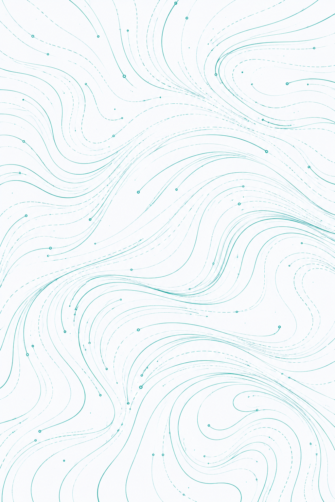

Etapa 18
Personalize sua experiência
Sua foto pode ser usada para criar experiências visuais únicas e tornar sua jornada emocional ainda mais personalizada.
Tocar para escolher

Personalize sua experiência
Sua foto pode ser usada para criar experiências visuais únicas e tornar sua jornada emocional ainda mais personalizada.